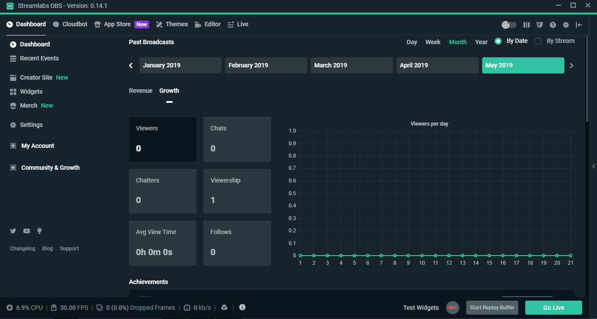
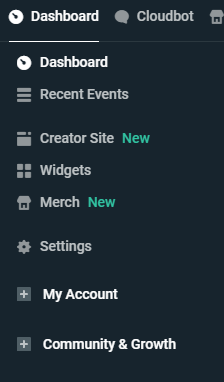
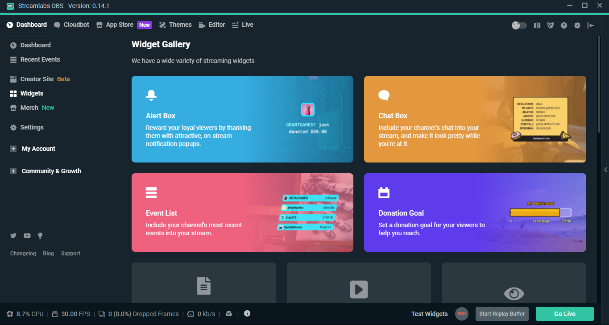
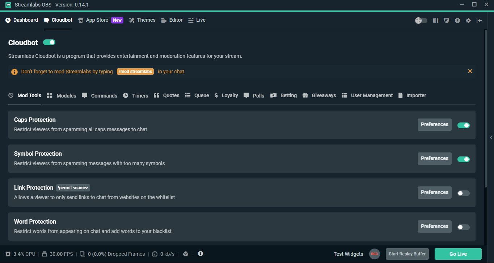

En este apartado explicare los diferentes menús y opciones basicas que streamlabs OBS incluye.
Empecemos por la primera ventana:

Aquí encontramos las estadisticas de los streamings como los diferentes logros de twitch.
Dentro de esta ventana encontramos las siguientes:

-Recent events
Dentro de esta podemos ver los eventos recientes como donaciones suscripciones o follows, tambien podemos realizar sorteos con las diferentes erramientas que stramlabs aporta a OBS.
-Creator site
En este apartado podemos crear y modificar el diseño de una web de la cual disponemos de plantillas relacionadas con tu canal y dispones de una vista previa en las diferentes plataformas (movil, tablet, ordenador).
Este apartado tambien incluye un administrador de correos electronicos.
-Widgets
En esta pestaña dispones de una lista de widget que streamlabs incluye.

-Settings
En este apartado disponemos de los ajustes de la cuenta, los ajustes de las donaciones y los ajustes de la API
Pasemos a la segunda ventana, Cloudbot:

Aquí encontramos la configuración de un bot para moderar el chat del streaming, añadir comandos personalizados (Ej. cuando alguien escribe en el chat "!redes" el bot le responde con un mensaje personalizado mostrando tus redes sociales). Con este, tambien puedes crear timers, es decir, cada cierto tiempo o cada cirto número de mensajes enviara un mensaje por el chat.
La ventana App Store es una tienda de aplicaciones que pueden ayudan a mejorar tu streaming añadiendo minijuegos en el chat, estadisticas en el streaming...
En la ventana themes podemos buscar y descargar temas prediseñados para usar como overlay, podemos filtrar por: colores, estaticos o animados, dependiendo de el juego y las escenas que incluyan. Para instalarlos, simplemente lo elegimos y clicamos en instalar, este se empezara a descargar y se instalará, puedes cambiar entre distintos temas en la ventana editor haciendo click sobre Scenes.
Para mostrar esto he realizado un videotutorial
Editor
Esta ventana encontramos la vista previa de lo que se esta grabando o retransmitiendo desde aquí podemos configurar lo que se va a ver, es decir, las escenas y las fuentes las cuales explicaré más adelante
En la ventana Live podemos ver las últimas notificaciones sobre nuestro canal, los ultimos seguidores, suscriptores y donaciones